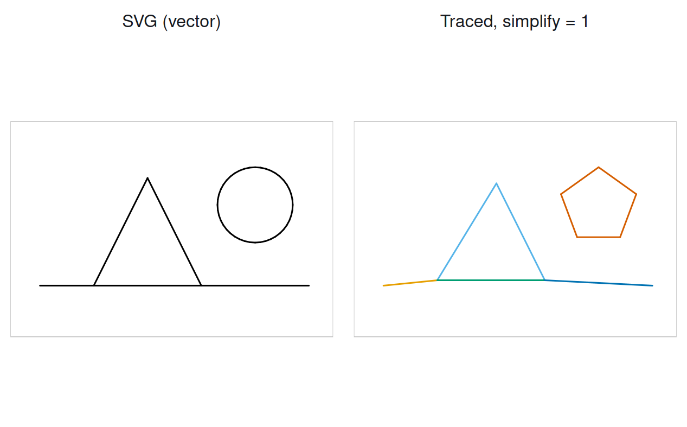
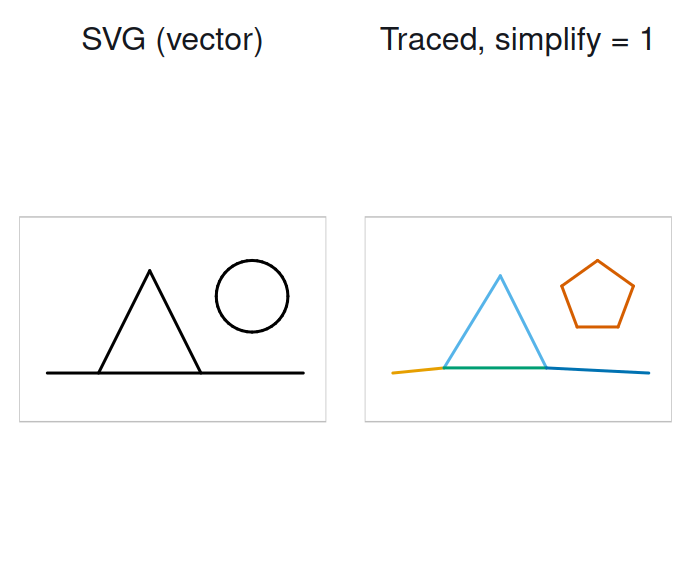
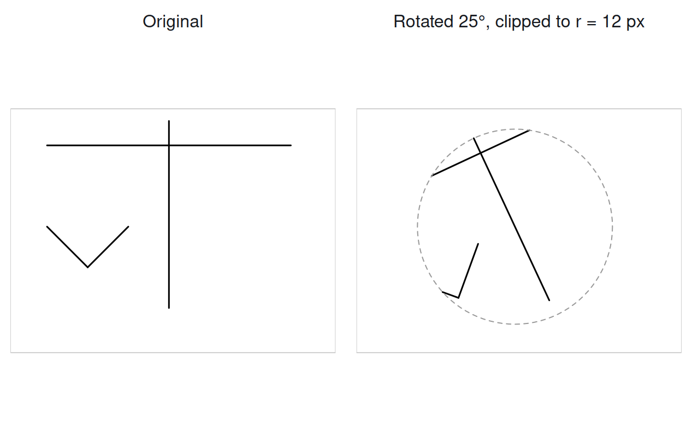
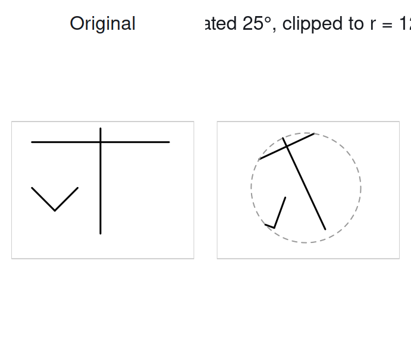

This vignette covers the steps around measurement: getting drawings
into R from SVG, MATLAB and image files, editing them, fixing a
measurement recipe for a study, and applying a fitted model to new
drawings with a check that the features were measured the same way. It
assumes the drawing, segment and histogram vocabulary of
vignette("getting-started", package = "mlvtoolbox").
The file adapters use optional packages: xml2 for SVG, R.matlab for MAT files, and png or jpeg for images. Chunks that need a missing package are skipped when this vignette is built.
Vector drawings from SVG
read_mlv_svg() reads lines, polylines, polygons,
rectangles, circles, ellipses, Bézier paths and elliptical arcs,
applying any transforms. Curves are sampled into straight segments about
curve_step pixels long; curve_step sets the
sampling density and is not a guaranteed bound on the distance from the
true curve. Each SVG element becomes one contour. The viewBox origin
maps to image coordinate (1, 1). Text, embedded images, clipping, masks
and paint effects are not rendered, and with the default
strict = TRUE a visible unsupported element is an error
rather than being silently dropped.
svg_file <- tempfile(fileext = ".svg")
writeLines(c(
'<svg xmlns="http://www.w3.org/2000/svg" width="60" height="40" viewBox="0 0 60 40">',
' <line x1="5" y1="30" x2="55" y2="30" stroke="black"/>',
' <polyline points="15,30 25,10 35,30" fill="none" stroke="black"/>',
' <circle cx="45" cy="15" r="7" fill="none" stroke="black"/>',
'</svg>'), svg_file)
from_svg <- read_mlv_svg(svg_file)
from_svg
#> <mlv_drawing> 3 contours, 47 segments, 60 x 40 pixels
from_svg$source$method
#> [1] "svg"The drawing keeps its import provenance in $source. The
circle has become a closed polygon whose segment count follows from
curve_step.
Drawings from MATLAB files
The original MLV toolbox stores vector drawings as vecLD
structures in MATLAB files. read_mlv_mat() reads version 5
MAT files (not v7.3/HDF5) and returns one drawing per structure element.
Only the contours and imsize fields are read;
measurements MLV stored in the structure are ignored and recomputed.
drawings <- read_mlv_mat("drawings.mat", variable = "vecLD")
# MLV files occasionally contain zero-length segments; drop them explicitly.
drawings <- read_mlv_mat("drawings.mat", zero_length = "drop")To reproduce values that MLV published for such files, see
vignette("mlv-compatibility", package = "mlvtoolbox").
Tracing raster line drawings
trace_contours() turns a black-on-white line image, a
grayscale matrix or a logical ink mask into contours. Pixels darker than
threshold are ink; the mask is thinned to one pixel wide
with the same thinning used for the medial axis, and the thin ink is
traced as a graph of eight-connected pixels. Paths are split at junction
pixels and closed loops stay closed. simplify fits straight
segments to each traced path, with a mean point-to-line distance of at
most the given number of pixels.
Here the SVG drawing is rasterized to a PNG and traced back.
png_file <- tempfile(fileext = ".png")
write_mlv_png(from_svg, png_file)
traced <- trace_contours(png_file)
traced
#> <mlv_drawing> 5 contours, 128 segments, 60 x 40 pixels
simplified <- trace_contours(png_file, simplify = 1)
simplified
#> <mlv_drawing> 5 contours, 10 segments, 60 x 40 pixels
op <- par(mfrow = c(1, 2), mar = c(0.5, 0.5, 2, 0.5), cex.main = 1, font.main = 1)
plot(from_svg, axes = FALSE, lwd = 1.5, main = "SVG (vector)")
plot(simplified, axes = FALSE, lwd = 1.5,
col = rep(grDevices::palette.colors(8, "Okabe-Ito")[c(2, 3, 4, 6, 7, 8)],
length.out = length(simplified$contours))[
as.data.frame(simplified)$contour_index],
main = "Traced, simplify = 1")

The SVG drawing (left) and its traced raster copy simplified to 1 px (right). Colours mark traced contours: tracing splits the horizon where the roof meets it, thinning bends the traced horizon slightly near those junctions, and the coarse simplification reduces the circle to a pentagon.
par(op)Traced drawings differ from vector drawings in ways that change measurements. A raster has no record of which stroke a pixel came from, so tracing splits contours at every junction: the horizon, one contour in the SVG, becomes several. Contour identity affects junction detection, length histograms and every per-contour feature, so measurements of a traced drawing are not interchangeable with measurements of its vector source.
For colour photographs, trace_rgb() takes an RGB image
and a backend function that returns a logical ink mask. The
package does not bundle an edge or segmentation model; whatever produces
the mask (and its weights and preprocessing) is the backend’s
responsibility, and the backend’s name is recorded in the drawing’s
provenance.
Editing drawings
Geometry-changing operations return a new drawing and discard derived measurements, so stored orientations or junctions cannot silently describe geometry they were not computed from.
drawing <- mlv_drawing(
list(matrix(c(5, 5, 35, 5), 1),
matrix(c(20, 2, 20, 25), 1),
rbind(c(5, 15, 10, 20), c(10, 20, 15, 15))),
width = 40, height = 30)
halves <- split_contours(drawing, property = "length", fraction = 0.5)
c(top = sum(as.data.frame(halves$top)$length),
budget = 0.5 * sum(as.data.frame(drawing)$length))
#> top budget
#> 30.00000 33.57107
pieces <- segment_at_junctions(drawing)
length(pieces$contours)
#> [1] 5split_contours() ranks whole contours by a property and
fills each group up to its length budget without splitting a contour, so
a group can fall short of its budget and a middle contour can stay
unassigned. segment_at_junctions() cuts contours where they
meet others. rotate_drawing(),
shift_contours() and clip_circle() transform
or crop the geometry.
op <- par(mfrow = c(1, 2), mar = c(0.5, 0.5, 2, 0.5), cex.main = 1, font.main = 1)
plot(drawing, axes = FALSE, lwd = 1.5, main = "Original")
plot(clip_circle(rotate_drawing(drawing, 25), radius = 12), axes = FALSE,
lwd = 1.5, main = "Rotated 25°, clipped to r = 12 px")
t <- seq(0, 2 * pi, length.out = 97)
lines(20 + 12 * cos(t), 15 + 12 * sin(t), lty = 2, col = "grey60")

A drawing (left) after a 25 degree counterclockwise rotation and a circular crop of radius 12 px about the canvas centre (right).
par(op)Medial-axis measurements
analyse_mat() rasterizes the drawing, computes the
distance map, average outward flux and skeleton, scores each skeleton
branch and maps the scores back onto the contours. Its parameters,
including the method choices for each stage, are recorded with the
result.
result <- analyse_mat(drawing, min_branch_points = 2)
result$mat$parameters[c("aof", "morphology", "branch_rule")]
#> $aof
#> [1] "centered"
#>
#> $morphology
#> [1] "minimal"
#>
#> $branch_rule
#> [1] "invariant"Each stage and score, and how to read these parameters, is explained
in vignette("medial-axis", package = "mlvtoolbox"). The
settings that reproduce published MLV values are given in
vignette("mlv-compatibility", package = "mlvtoolbox").
Feature recipes and checked prediction
A study measures many drawings and often fits a model to the features
of one set and applies it to another. Two things must hold for that to
be valid: every drawing must be measured with the same recipe, and the
model must be applied only to features with the same columns, bins,
units and estimators as its training data. A feature specification
(feature_spec()) fixes the recipe;
bind_feature_model() attaches the training schema to a
model so that predict_contours() can check it.
spec <- feature_spec(c("length", "curvature"), bins = 2, normalize = FALSE,
estimator = "arclength", curvature_scale = 2)
measured <- compute_contour_properties(drawing, spec = spec)
training <- feature_table(measured)
training
#> contour_id length_1 length_2 curvature_1 curvature_2
#> 1 1 30.00000 0 30.00000 0.000000
#> 2 2 23.00000 0 23.00000 0.000000
#> 3 3 14.14214 0 10.90119 3.240943The target values below are synthetic, solely to show the mechanics; the model is bound to the unchanged table it was trained on.
training$target <- c(1, 2, 3)
fit <- lm(target ~ curvature_2, data = training)
bound <- bind_feature_model(fit, feature_table(measured))
predict_contours(drawing, bound, spec = spec)
#> [1] 1.5 1.5 3.0Prediction recomputes the features of the new drawing under
spec and compares their schema with the training schema
before calling the model. A different recipe, here three bins instead of
two, is rejected with a list of the fields that differ:
other <- feature_spec(c("length", "curvature"), bins = 3, normalize = FALSE,
estimator = "arclength", curvature_scale = 2)
tryCatch(predict_contours(drawing, bound, spec = other),
error = conditionMessage)
#> [1] "feature schema mismatch: measurement_spec, columns.name, columns.property, columns.bin, columns.label, columns.lower, columns.upper, columns.center, columns.measurement_units, columns.weight, columns.boundary, columns.units"check_spec = FALSE bypasses the check with a warning. It
exists for legacy models and gives no protection.
Physical units
Lengths can be measured in degrees of visual angle instead of pixels.
The calibration (pixels_per_degree) belongs to the input,
not the recipe: a drawing displayed at a different resolution supplies
its own calibration to feature_table() or
predict_contours(), and recipes that agree after conversion
to visual degrees have the same schema. Turning angles remain geometric
degrees; curvature is then in geometric degrees per degree of visual
angle.
physical <- feature_spec(c("length", "curvature"), bins = 2, normalize = FALSE,
estimator = "arclength", curvature_scale = 0.1,
units = "visual_degrees", pixels_per_degree = 20)
physical_table <- feature_table(drawing, spec = physical)
physical_table
#> contour_id length_1 length_2 curvature_1 curvature_2
#> 1 1 1.5000000 0 1.5000000 0.0000000
#> 2 2 1.1500000 0 1.1500000 0.0000000
#> 3 3 0.7071068 0 0.5090044 0.1981024At 20 pixels per degree the 30-pixel horizontal line is 1.5 degrees of visual angle long, the 23-pixel vertical line 1.15 and the V 0.71.
Raster stages remain resolution-dependent even in physical units:
medial-axis extraction and the histograms of mapped pixel scores operate
on the pixel grid. For physical branch windows use
branch_estimator = "arclength", and
analyse_mat(drawing, spec = recipe)$drawing retains the
resolved recipe and the mapping coverage.
Saving features
write_feature_csv() writes drawing or contour statistics
to CSV, together with a companion <file>.schema.rds
that preserves the schema, calibration and provenance, so a table read
back later can still be checked.
csv_file <- tempfile(fileext = ".csv")
invisible(write_feature_csv(measured, csv_file))
file.exists(paste0(csv_file, ".schema.rds"))
#> [1] TRUEWhere to go next
-
vignette("getting-started", package = "mlvtoolbox"): segment measurements, histograms and feature specifications. -
vignette("junctions", package = "mlvtoolbox"): how junctions are found and what they measure. -
vignette("medial-axis", package = "mlvtoolbox"): medial-axis symmetry scores. -
vignette("mlv-compatibility", package = "mlvtoolbox"): reproducing published MLV values.